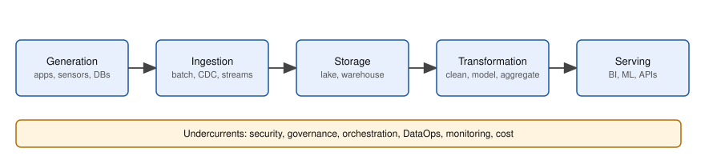
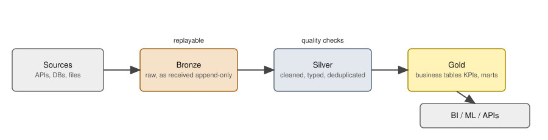

Imagine your company runs an online shop called ShopKart. Every second, customers place orders, the app logs clicks, and payment machines send messages. The business wants a dashboard that says "revenue by city, yesterday", and a data scientist wants clean tables to train a model. Someone must move the data, clean it, store it, and keep it correct every single day, even when a server dies at 3 a.m. That person is a data engineer. In this chapter you will learn the map of the whole field: the stages data passes through, the main building styles (warehouse, lake, lakehouse, medallion), and the ideas that keep pipelines reliable. By the end you will be able to look at any data system and say what each box is for, and why it was chosen. We will use ShopKart as the running example in the whole document.
You already know a lot from everyday life: the queue at a bank, delivery times, a busy restaurant kitchen. Data engineering is the same systems thinking (queues, throughput, bottlenecks, percentiles), applied to data that must also be correct, not only fast.
| Word | Plain meaning | ShopKart example |
|---|---|---|
| Source system | The app or machine that creates data | The orders database, the mobile app |
| Ingestion | Moving data from the source to a place we control | Copying new orders every hour |
| Storage | Keeping data safely and cheaply | Files in cloud object storage, a warehouse |
| Transformation | Cleaning and reshaping data into useful tables | Remove duplicates, convert paise to rupees |
| Serving | Giving data to the people and programs that use it | A dashboard, an ML model, an API |
| Governance | Rules about who may see data and how long we keep it | Hide customer phone numbers from analysts |
| Pipeline | A chain of steps that moves and transforms data automatically | "orders DB to dashboard" |

How to read the picture: data flows left to right through five boxes. The wide orange bar at the bottom is not a stage. It is a set of concerns that touch every stage: security, governance, orchestration (running steps in the right order, covered in Chapter 6), DataOps (applying software discipline to data work), monitoring and cost.
Problem 1.1.1 For ShopKart, name the lifecycle stage for each action: (a) a customer clicks "Buy"; (b) a script copies yesterday's orders to a file; (c) a job converts amounts from paise to rupees; (d) an analyst opens a Power BI report; (e) a rule says customer emails are deleted after 3 years.
| Step 1 | Ask "is data being created, moved, kept, reshaped, used, or governed?" |
|---|---|
| Step 2 | (a) creates data: generation. (b) moves data: ingestion. (c) reshapes: transformation. (d) uses: serving. (e) is a rule: governance, which is an undercurrent. |
| Answer | Generation, ingestion, transformation, serving, governance. |
| Check | Each stage was used once except storage, which is the place the file in (b) lands. Every action fits exactly one label. |
| Why it matters | In an interview, "which stage is slow or failing?" is the first question. Naming the stage narrows the search. |
Problem 1.1.2 The dashboard shows yesterday's revenue as 10% lower than finance's number. Using the lifecycle, list where the 10% could be lost, in order from source to dashboard.
| Step 1 | Walk the stages: generation (source missed events), ingestion (a batch failed or ran before the day ended), storage (a partition not written), transformation (a filter or a bad join dropped rows), serving (dashboard time zone cuts the day). |
|---|---|
| Step 2 | Rank by how cheap each is to test. Compare row counts at each hop: source count, landed count, cleaned count, dashboard count. |
| Answer | Count rows at every hop. The first hop where the count drops is the stage that lost the data. |
| Check | If source = landed = 1,000,000 but cleaned = 900,000, the transformation lost exactly 10%, which matches the complaint. |
| Why it matters | "Reconcile counts at each hop" is the simplest data-quality habit (Chapter 5). |
Job titles map to stages: ingestion engineers, analytics engineers (transformation, mostly SQL and dbt), platform engineers (storage, infrastructure), and ML engineers (serving features).
Check yourself
| Property | OLTP | OLAP |
|---|---|---|
| Typical query | one row by key | scan and aggregate millions of rows |
| Storage layout | row | column |
| Latency goal | milliseconds | seconds to minutes |
| Data model | normalized (many small tables) | denormalized star schema (Chapter 2) |
| Concurrency | thousands of small users | tens of heavy queries |
| ShopKart example | place an order | revenue by city by month |
Before you run it: which do you think is faster, 1,000 single-order lookups, or one whole-table aggregate over 500,000 rows? And will both use an index?
import sqlite3, time, random
random.seed(1)
db = sqlite3.connect(":memory:")
db.execute("CREATE TABLE orders(order_id INTEGER PRIMARY KEY, customer_id INT, country TEXT, amount REAL)")
rows = [(i, random.randint(1,50000), random.choice(["IN","US","UK","DE"]), round(random.uniform(5,500),2)) for i in range(1,500001)]
db.executemany("INSERT INTO orders VALUES(?,?,?,?)", rows); db.commit()
print("rows:", db.execute("SELECT COUNT(*) FROM orders").fetchone()[0])
print("-- OLTP style: fetch one order")
for r in db.execute("EXPLAIN QUERY PLAN SELECT * FROM orders WHERE order_id=424242"): print(r[3])
t = time.perf_counter()
for _ in range(1000): db.execute("SELECT * FROM orders WHERE order_id=?", (random.randint(1,500000),)).fetchone()
print(f"1000 point lookups: {(time.perf_counter()-t)*1000:.1f} ms")
print("-- OLAP style: aggregate everything")
for r in db.execute("EXPLAIN QUERY PLAN SELECT country, SUM(amount) FROM orders GROUP BY country"): print(r[3])
t = time.perf_counter()
res = db.execute("SELECT country, ROUND(SUM(amount),2), COUNT(*) FROM orders GROUP BY country ORDER BY 1").fetchall()
print(res); print(f"1 full aggregate: {(time.perf_counter()-t)*1000:.1f} ms")Real output (timings change a little on every machine; the plans and totals do not):
rows: 500000
-- OLTP style: fetch one order
SEARCH orders USING INTEGER PRIMARY KEY (rowid=?)
1000 point lookups: 1.7 ms
-- OLAP style: aggregate everything
SCAN orders
USE TEMP B-TREE FOR GROUP BY
[('DE', 31657878.42, 124973), ('IN', 31547687.52, 125134), ('UK', 31617908.13, 124856), ('US', 31578025.69, 125037)]
1 full aggregate: 129.7 msExplain, line by line.
SEARCH ... USING INTEGER PRIMARY KEY means the database jumped straight to the row, like opening a book at a page number. Cost per lookup is tiny: 1000 lookups took 1.7 ms, so about 0.0017 ms each.SCAN orders means the database read every row. One scan took 129.7 ms, which is about 76 times the cost of all 1000 lookups together (129.7 / 1.7 = 76.3).| Style | Meaning | Typical latency | Example |
|---|---|---|---|
| Batch | Process a big chunk on a schedule | minutes to hours | nightly load of orders |
| Micro-batch | Run tiny batches every few seconds | seconds | Spark Structured Streaming default |
| Streaming | Handle each event as it arrives | milliseconds to seconds | fraud check on a card swipe |
Analogy: batch is a bus that leaves every hour. Micro-batch is a metro train every 5 minutes. Streaming is a taxi per person. Taxis cost more per passenger. Pick the slowest style that meets the business need.
Problem 1.2.1 ShopKart needs a revenue dashboard refreshed every morning, and a fraud alert within 2 seconds of a payment. Which style for each?
| Step 1 | Dashboard: tolerance is a day. A nightly batch is enough. |
|---|---|
| Step 2 | Fraud: tolerance is 2 seconds. Only streaming (or very small micro-batch) fits. |
| Answer | Batch for the dashboard, streaming for fraud. |
| Check | If we used a nightly batch for fraud, the median delay would be 12 hours, far above 2 seconds. |
| Why it matters | Streaming is harder to run and test. Do not pay for it when batch is enough. |
Problem 1.2.2 A table has 50 columns, each about 8 bytes, 100 million rows. A query reads 2 columns. How many GB must row storage read versus columnar storage (ignoring compression)?
| Formula | bytes = rows × bytes per value × columns read |
|---|---|
| Plug in (row) | all 50 columns are stored together: 100,000,000 × 8 × 50 |
| Compute (row) | 40,000,000,000 bytes = 40 GB |
| Plug in (column) | 100,000,000 × 8 × 2 = 1,600,000,000 bytes = 1.6 GB |
| Answer | Row storage reads 40 GB, columnar reads 1.6 GB, which is 25 times less. (Compression helps columns even more.) |
| Check | 2 / 50 = 0.04, and 0.04 × 40 GB = 1.6 GB. |
You will copy data out of OLTP systems into OLAP systems, and you must do it without slowing down the shop. Running a heavy analytic query on the live order database is a classic outage. In SQL terms, the heavy GROUP BY queries are covered in the SQL document (study/sql/, the aggregation chapter).
Check yourself
| ETL | ELT | |
|---|---|---|
| Where transform runs | separate engine | inside warehouse or lake engine |
| Raw data kept? | often not | yes |
| Fix a logic bug later | hard, source may be gone | re-run from raw |
| Good for | strict privacy before load, tiny targets | most modern analytics |
When would you still do ETL? When rules forbid raw personal data from landing (mask first), or when the target cannot do heavy transforms.
| Style | One-line idea | Strength | Weakness |
|---|---|---|---|
| Data warehouse | Structured, modelled tables in an SQL engine | fast, trusted BI | costly for raw or unstructured data |
| Data lake | Cheap files (any format) in object storage | cheap, flexible | can become a "swamp": no rules, no ACID |
| Lakehouse | Lake files plus a table format (Delta, Iceberg, Hudi) giving ACID, time travel | one copy for BI and ML | needs table-format know-how |
| Data mesh | Each business domain owns its data as a product | scales across big organisations | needs culture and platform maturity |
| Lambda | A batch path (accurate) plus a speed path (fast), merged | both accuracy and speed | two code bases to keep in sync |
| Kappa | Everything is a stream; reprocess by replaying the log | one code base | needs a replayable log (Kafka) and good streaming skills |
ACID means a change is Atomic (all or nothing), Consistent, Isolated (parallel changes do not clash) and Durable (kept after a crash). Plain files in a lake do not give you this; table formats add it (Chapter 3).

Reading the picture: data moves left to right. Bronze is the raw copy exactly as received (append only, so you can always replay). Silver is cleaned: correct types, duplicates removed, bad rows removed or quarantined. Gold holds business-ready tables such as "revenue by country". Each arrow is a job, and between layers we run quality checks.
Before you run it: five raw JSON messages arrive. One order (O2) was sent twice with a corrected amount, and one (O3) has amount "abc". How many rows should silver have, and what is the revenue for IN?
CREATE TABLE bronze_orders(raw_id INTEGER PRIMARY KEY AUTOINCREMENT, payload TEXT, loaded_at TEXT);
INSERT INTO bronze_orders(payload,loaded_at) VALUES
('{"order_id":"O1","amount":"250.0","country":"in"}','2024-06-01'),
('{"order_id":"O2","amount":"80","country":"IN"}','2024-06-01'),
('{"order_id":"O2","amount":"85","country":"IN"}','2024-06-02'),
('{"order_id":"O3","amount":"abc","country":"us"}','2024-06-02'),
('{"order_id":"O4","amount":"40","country":"US"}','2024-06-02');
CREATE VIEW silver_orders AS
SELECT order_id, CAST(amount AS REAL) AS amount, UPPER(country) AS country FROM (
SELECT json_extract(payload,'$.order_id') order_id, json_extract(payload,'$.amount') amount,
json_extract(payload,'$.country') country,
ROW_NUMBER() OVER (PARTITION BY json_extract(payload,'$.order_id') ORDER BY raw_id DESC) rn
FROM bronze_orders) WHERE rn=1 AND amount GLOB '[0-9]*';
CREATE VIEW gold_revenue_by_country AS
SELECT country, COUNT(*) orders, SUM(amount) revenue FROM silver_orders GROUP BY country;
SELECT * FROM silver_orders;
SELECT * FROM gold_revenue_by_country;Real output:
silver (deduped, typed, bad rows removed)
order_id amount country
-------- ------ -------
O1 250.0 IN
O2 85.0 IN
O4 40.0 US
gold (business metric)
country orders revenue
------- ------ -------
IN 2 335.0
US 1 40.0 Explain.
json_extract reads fields out of the raw text. Bronze keeps the text untouched, so nothing is lost.ROW_NUMBER() OVER (PARTITION BY order_id ORDER BY raw_id DESC) numbers each order's copies newest first. rn=1 keeps only the latest. This is how O2 became 85.0, not 80. (Window functions are taught in the SQL document, study/sql/.)amount GLOB '[0-9]*' drops "abc" (O3). In a real pipeline you would send it to a quarantine table, not silently delete it."Where does this table sit, bronze, silver or gold?" is asked in every code review. In Databricks, Snowflake and Fabric projects, medallion naming is the default.
Check yourself
| Word | Plain meaning | Example |
|---|---|---|
| Data contract | A written agreement on fields, types and meaning between the producer and consumer of data | "orders.amount is a number in paise, never null" |
| Schema evolution | Changing the fields over time without breaking readers | adding a nullable column coupon |
| Idempotent | Running twice gives the same result as running once | "set stock = 7" (idempotent) vs "stock = stock − 1" (not) |
| At-most-once | A message may be lost, never repeated | fire and forget |
| At-least-once | Never lost, may repeat | retry until acknowledged |
| Exactly-once | Effect happens once (in practice: at-least-once plus idempotent processing) | payment ledger |
| Backfill | Re-run a pipeline for past dates | recompute March after a bug fix |
| Late-arriving data | An event that reaches you after its day was processed | mobile app offline for 2 hours |
| CDC | Change Data Capture: reading the database change log to copy inserts, updates and deletes | Debezium (Chapter 4) |
| SLI / SLO / SLA | Indicator (what we measure), Objective (our target), Agreement (the promise to customers, with penalty) | SLI: freshness. SLO: 99% of days fresh by 7 a.m. |
| DLQ | Dead-letter queue: a place for messages that keep failing | bad JSON lines |
| FinOps | Managing cloud cost as an engineering topic | tag jobs, set budgets |
Problem 1.4.1 A job adds today's sales of 500 to a total of 1,000 using total = total + 500. It crashes after writing and the scheduler retries it once. What is the total? Then repeat with total = yesterday_total + today_sales where yesterday_total = 1,000.
| Step 1 | Non-idempotent update: first run gives 1,000 + 500 = 1,500. Retry gives 1,500 + 500 = 2,000. |
|---|---|
| Step 2 | Idempotent version: first run gives 1,000 + 500 = 1,500. Retry gives 1,000 + 500 = 1,500, because the base is yesterday's saved value, not "whatever is there now". |
| Answer | The first design double counts (2,000), the second stays correct (1,500). |
| Check | Real sales are 500, so the correct total is 1,500. The first design is off by 500, exactly one duplicate run. |
| Why it matters | Retries are normal in distributed systems. Every task you write must survive them. This is the most important habit of this document. |
You will run an idempotent loader in Chapter 4 and an idempotent task runner in Chapter 6.
Producer ---msg--> Broker ---msg--> Consumer ---> Database
ack? ack?
at-most-once : consumer commits position BEFORE processing -> crash = message lost
at-least-once: consumer commits position AFTER processing -> crash = message processed twice
exactly-once : at-least-once + idempotent write (key) or transactionProblem 1.4.2 A consumer processes a message that adds 100 to a balance, then crashes before saving its position. On restart it re-reads the message. With at-least-once, what do we get if (a) the write is "balance += 100", (b) the write is "insert payment_id=P77 amount=100, ignore if P77 exists" and the balance is the sum of payments?
| Step 1 | (a) The message is applied twice: balance rises by 200. |
|---|---|
| Step 2 | (b) The second insert is ignored because P77 exists. The balance sum rises by 100. |
| Answer | (a) wrong by 100, (b) correct. Exactly-once effect = at-least-once delivery + idempotent write. |
| Check | One payment of 100 should change the balance by 100: only (b) does. |
| Concept | Example value | Where in the job |
|---|---|---|
| Partition count | 12 Kafka partitions | limits consumer parallelism |
| Replication factor | 3 | survive loss of 2 brokers (with a correct min-ISR setting, see Chapter 11) |
| Consistency | eventual | dashboard may lag the source by minutes |
| Retry with backoff | wait 1s, 2s, 4s | a flaky API |
Problem 1.4.3 A 3-replica system needs a majority (quorum) to accept a write. How many replicas can fail while writes still work? What if there are 5 replicas?
| Formula | quorum = ⌊n / 2⌋ + 1; tolerated failures = n − quorum |
|---|---|
| Compute (n = 3) | quorum = ⌊1.5⌋ + 1 = 2; failures tolerated = 3 − 2 = 1 |
| Compute (n = 5) | quorum = ⌊2.5⌋ + 1 = 3; failures tolerated = 5 − 3 = 2 |
| Answer | 3 replicas survive 1 failure, 5 survive 2. |
| Check | With n = 4: quorum 3, tolerate 1. Four replicas tolerate no more than three, which is why odd numbers are chosen. |
Reliability is what you are paid for. Interviewers ask: "What happens if this job runs twice? If it fails halfway? If data arrives a day late?" Always answer with idempotency, retries, DLQ, and backfill.
Check yourself
INSERT ... ON CONFLICT DO UPDATE idempotent? Answer: yes, repeating it leaves the same final row.| Pattern | Rule |
|---|---|
| Bytes read by a query | rows × bytes per value × columns read |
| Quorum | ⌊n/2⌋ + 1 |
| Idempotent write | upsert by key, overwrite by partition, never "x = x + 1" |
| Row-count reconcile | count at every hop, find first drop |
1. (easy) Name the five lifecycle stages in order. Answer: Generation, ingestion, storage, transformation, serving.
2. (easy) OLTP or OLAP: "show the status of order 991". Answer: OLTP, one row by key.
3. (easy) A table has 20 columns of 8 bytes and 10 million rows. Bytes read by a query of 1 column in a columnar store? Answer: 10,000,000 × 8 × 1 = 80,000,000 bytes = 80 MB (row storage: 1.6 GB).
4. What is the output? Silver view above, if O4's amount were "4x0". How many silver rows? Answer: GLOB '[0-9]*' only checks the first character, so "4x0" passes (and CAST gives 4.0). The check is too weak. 3 rows remain, with a wrong value. Better to validate the full pattern or use a typed parser.
5. Find the bug: UPDATE stock SET qty = qty - 1 WHERE sku='A1' is run by a retrying task. Answer: Not idempotent: a retry decrements twice. Use an event table with a unique event id and compute the stock from it.
6. A 5-broker cluster needs a majority to elect a leader. How many failures can it survive? Answer: quorum 3, so 2 failures.
7. ShopKart wants "orders in the last 10 seconds per city" on a live screen. Which style and why? Answer: streaming (or a short micro-batch), because the freshness need is seconds.
8. A pipeline loaded 1,000,000 rows from source and 1,000,000 into silver, but gold shows 940,000 orders. Where do you look first? Answer: the gold transformation (joins/filters). Counts matched until silver.
9. (interview) "Explain ETL versus ELT and when you would choose each." Answer: ETL transforms before loading; ELT loads raw then transforms inside the warehouse. Choose ELT by default because storage is cheap, raw data allows replay, and SQL tools are mature. Choose ETL when privacy rules forbid raw data landing or the target cannot transform. Mention that bronze/silver/gold keeps raw data in ELT.
10. (interview) "What does exactly-once mean in a pipeline?" Answer: The effect on the target is applied once, even if messages are delivered more than once. It is built from at-least-once delivery plus idempotent writes or transactions, not from the network.
11. (scenario) A backfill of 90 days must run without double counting. How? Answer: Make each daily task overwrite its own date partition (or upsert by key), parameterise by the logical date, and run the 90 dates, possibly in parallel. Verify with row counts per day.
You are my patient, practical professor. I am a working professional moving into data roles, and English is my second language, so use simple words. Teach me the data engineering lifecycle (generation, ingestion, storage, transformation, serving, and the undercurrents). Use one running example, an online shop. Explain step by step with an analogy first, then check my understanding with 3 short questions, one at a time, and wait for my answers before continuing.
You are my patient, practical professor. I am a working professional moving into data roles. Topic: OLTP versus OLAP, and row versus columnar storage. Give me 8 graded exercises, from easy to hard, with real numbers (rows, columns, bytes per value, bytes scanned). Do not give solutions. After I answer, I will paste my work and you will check every step and correct my mistakes kindly.
You are my patient, practical professor. I am a working professional moving into data roles, and I am learning data engineering with simple English. Topic: ETL versus ELT and the architecture styles (warehouse, lake, lakehouse, mesh, lambda, kappa, medallion). Quiz me one question at a time, mixing definitions with short scenarios ("a bank must mask card numbers before storage; which style?"). After each answer, say what is right, what is missing, and give a one-line memory trick.You are my patient, practical professor. I am a working professional moving into data roles. Topic: idempotency, at-least-once versus exactly-once effect, retries, backfills, and the CAP theorem. Explain each with a courier or bank analogy, then show a tiny Python or SQL example where a retry causes a double count and the fix. Then ask me to predict the output of a new example before you reveal it.
You are my patient, practical professor. I am a working professional moving into data roles, applying for junior data engineer roles. Run a mock interview on the data engineering lifecycle, OLTP/OLAP, ELT, medallion, idempotency and delivery guarantees. Ask 8 questions, one at a time. After each of my answers, score it from 1 to 5, show a model answer in simple English, and tell me what an interviewer would want to hear in addition. My answers: [PASTE HERE]